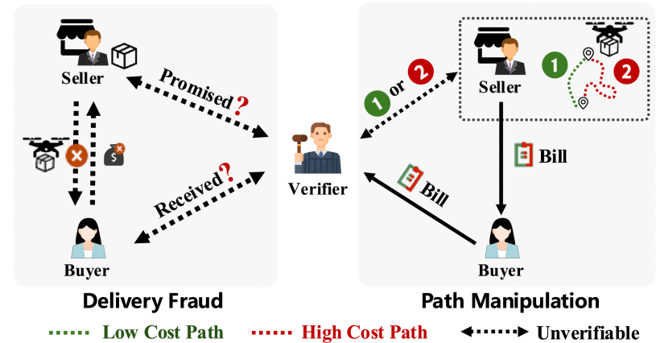
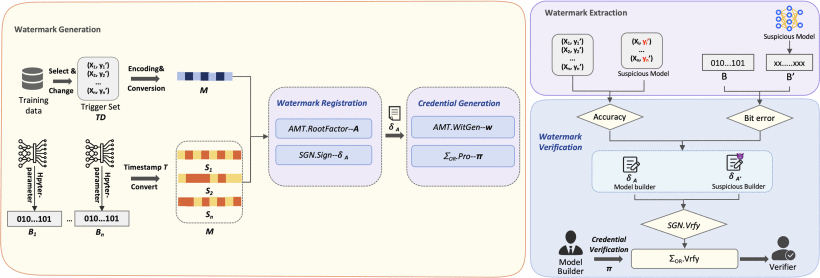
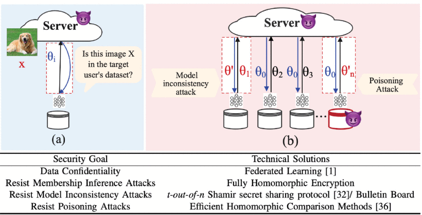
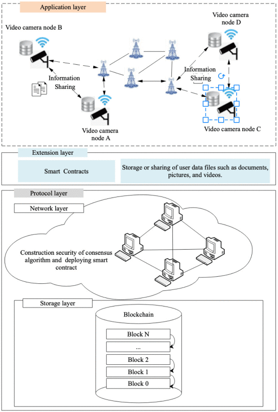
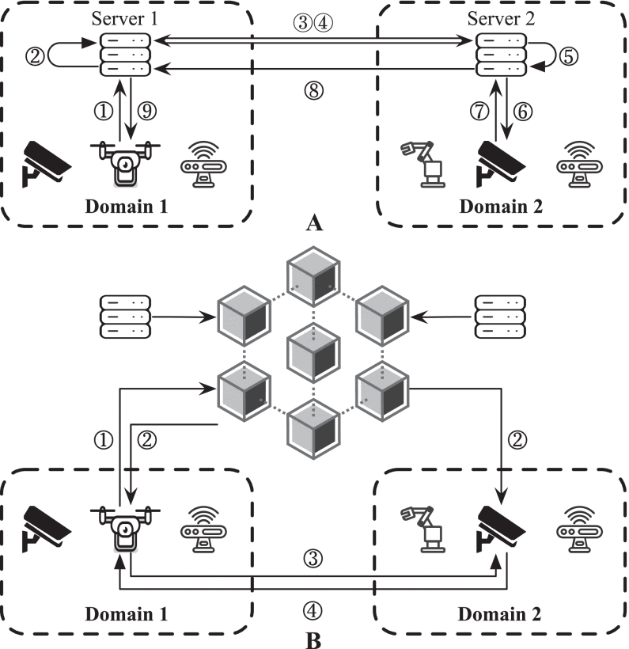
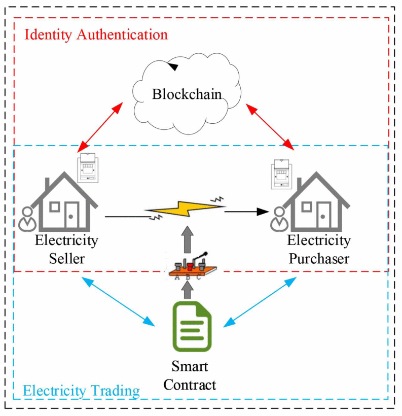

Mitigating Delivery Fraud and Path Manipulation in UAV-Based E-Commerce: A Fair Exchange Protocol
IEEE Transactions on Information Forensics and Security, 2026 CCF A
Zhengzhou University · School of Cyber Science and Engineering, Zhengzhou, China
Hi! I am Xiaohan Hao (郝晓涵), an Associate Professor at the School of Cyber Science and Engineering, Zhengzhou University. I received my Ph.D. in Artificial Intelligence from The Hong Kong University of Science and Technology (Guangzhou) in 2026, under the supervision of Prof. Xinyi Huang (黄欣沂).
My research interests lie broadly in AI Security, Public-Key Cryptography, and Blockchain, with a particular focus on LLM and agent security, privacy-preserving machine learning, federated learning, model ownership protection, and cryptographic protocols for secure AI systems. I have published 17 papers in leading journals and conferences, including IEEE TIFS and IEEE TDSC, with one ESI Highly Cited Paper. My work has received nearly 800 citations on Google Scholar.
I am actively looking for motivated Ph.D., Master's, and undergraduate students to join our group. Our current research interests include LLM and Multi-Agent Security, Blockchain Security and Privacy, and Public-Key Cryptography. We maintain a collaborative and supportive research environment with regular research discussions, group activities, and opportunities to attend academic conferences and participate in professional competitions. Students with backgrounds in machine learning, system security, blockchain, cryptography, or programming are welcome. Outstanding students will also be supported in pursuing further study at leading universities in Hong Kong and mainland China.
Joined Zhengzhou University as an Associate Professor.
Our paper “Mitigating Delivery Fraud and Path Manipulation in UAV-Based E-Commerce: A Fair Exchange Protocol” was accepted by IEEE TIFS.
Our paper “GAMC: Generic and Anti-MDA Model Certification for Intellectual Property Protection in MLaaS” was published online in IEEE TDSC.
Our paper “Robust and Secure Federated Learning Against Hybrid Attacks: A Generic Architecture” appeared in IEEE TIFS.

IEEE Transactions on Information Forensics and Security, 2026 CCF A

IEEE Transactions on Dependable and Secure Computing, 2025 CCF A

IEEE Transactions on Information Forensics and Security, 2024 CCF A

IEEE Transactions on Computers, 2023 CCF A

IEEE Transactions on Services Computing, 2023 CCF A

IEEE Transactions on Industrial Informatics, 2022 CAS Q1 Top